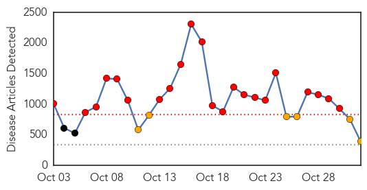
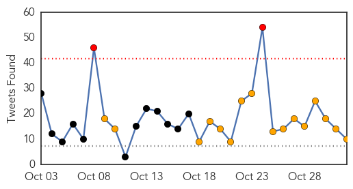
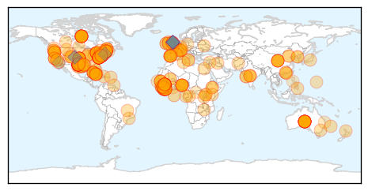
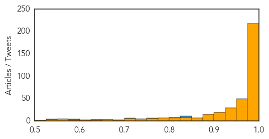

Measles
30-Day Web Trend
0 alerts, 0 warnings

30-Day Twitter Trend
0 alerts, 0 warnings

Article Locations

Article Confidences

Top Articles:
Top Tweets:
-
No tweets found for Nov 01, 2014
Ebola
30-Day Web Trend
22 alerts, 6 warnings

30-Day Twitter Trend
2 alerts, 16 warnings

Article Locations
Article Confidences
Top Articles:
- 1.000
- Canada restricts visas amid Ebola scare
- 1.000
- U.S doctor with Ebola improves; nurse’s quarantined dog released
- 1.000
- Obama Phones Ebola Fighters in West Africa
- 1.000
- Ebola: UN envoy says response must be sustained 'until every last case is contained and treated'
- 1.000
- U.S doctor with Ebola improves, nurse's quarantined dog released
- 1.000
- Ebola: UN envoy says response must be sustained 'until every last case is contained and treated'
- 1.000
- Ebolanoia: The Plague that's Sweeping America
- 1.000
- US reaction to Ebola outweighs actual risk
- 1.000
- NY doctor with Ebola improves, quarantined nurse reunited with her dog
- 1.000
- Ebola crisis: US judge eases quarantine limits on nurse Kaci Hickox, who treated Sierra Leone patients
- 1.000
- Ebola crisis: US judge eases quarantine limits on nurse Kaci Hickox, who treated Sierra Leone patients
- 1.000
- American official: US in Ebola fight for long haul: Nation/World
- 1.000
- AP IMPACT: US health care unprepared for Ebola: Here And Now
- 1.000
- Ebola: UN envoy says response must be sustained 'until every last case is contained and treated'
- 1.000
- Otago Daily Times Online News : Otago, South Island, New Zealand & International News
- 1.000
- Ebola quarantine policy wrong
- 1.000
- Ebola-hit Sierra Leone quarantines 31 health workers
- 1.000
- Can You Really Get Ebola From Your Dog?
- 1.000
- NYC Ebola patient improves; Oregon patient is 'low-risk' for virus
- 1.000
- New York doctor with Ebola improves, hospital says
- 1.000
- Woman being monitored for Ebola in Oregon hospitalized
- 1.000
- Ebola: UN envoy says response must be sustained 'until every last case is contained and treated'
- 1.000
- Ebola: UN envoy says response must be sustained 'until every last case is contained and treated'
- 1.000
- New York Doctor With Ebola Improves
- 1.000
- New York doctor with Ebola improves, hospital says
- 1.000
- CDC results show Tulsa County patient does not have Ebola
- 1.000
- Ebola: UN envoy says response must be sustained 'until every last case is contained and treated'
- 1.000
- Ebola screening trickles down to doctors' offices, care clinics
- 1.000
- Ghana, Business Advice, Jobs, News, Business Directory, Real Estate, Finance, Forms, Auto
- 1.000
- Ebola: UN envoy says response must be sustained 'until every last case is contained and treated'
- 1.000
- Ebola: UN envoy says response must be sustained 'until every last case is contained and treated'
- 1.000
- Liberia opens one of the country’s largest Ebola treatment centers
- 1.000
- Ebola outbreak: Get up to speed
- 1.000
- Canada restricts visas amid Ebola scare
- 1.000
- UN Says Response Must be Sustained Until Last Case is Contained
- 1.000
- Local health officials say they're preparing for Ebola
- 1.000
- Africans worst responders in Ebola crisis
- 1.000
- Vermonter voluntarily quarantined after trip to West Africa
- 1.000
- Canada imposes visa ban on Ebola-hit African countries — RT News
- 1.000
- A look at latest Ebola developments
- 1.000
- Ebola outbreaks in Nigeria, Senegal, appear contained: CDC reports
- 1.000
- Ebola outbreak: Get up to speed
- 1.000
- U.S doctor with Ebola improves, nurse's quarantined dog released
- 0.999
- Amid Ebola scare, Canada restricts visas
- 0.999
- WHO expects Ebola vaccines by 2015
- 0.999
- Amid Ebola scare, Canada restricts visas
- 0.999
- Canada to stop visas for West Africa - Emirates 24
- 0.999
- Amid Ebola scare, Canada restricts visas
- 0.999
- Nigeria Defeated Ebola Why Can’t The United States?
- 0.999
- Canada restricts visas amid Ebola scare
Showing top 50 articles...
Top Tweets:
- 0.964
- Ebola outbreak: Ebola may not be a deadly disease for everyone, scientists find | via http://t.co/sHZFUX4L5Z
- 0.880
- BBC News - Ebola outbreak: Sierra Leone escaped patient dies http://t.co/GAu4HT7RoT
- 0.832
- Morning all and hope you have a blessed day. Let's continue to pray for Africa especially Ebola West Africa Regions. 13,000 affected so far!
- 0.831
- 2/2 ..above what WHO recommends. WHO recommended no travel restrictions for Ebola.
- 0.801
- RT: Great news re: Spain an Ebola. Highlighting that with caution, the virus does not spread &cause disease easily
- 0.779
- Sierra Leone. Clinical Illness and Outcomes in Patients with Ebola in Sierra Leone ebolaresponse http://t.co/nsCzzgAWpI
- 0.775
- VIDEO: Ebola's Toll in Sierra Leone http://t.co/fACk3NYEGV TackleEbola
- 0.762
- Short of medical facilities are affecting other health issues. God help our continent especially affected Ebola affected regions.
- 0.723
- Ebola death toll rises, fewer cases in Guinea than thought: WHO http://t.co/BZBl88IaUu via
- 0.711
- RT: MSF: US quarantines 'chilling' Ebola fight in West Africa http://t.co/Wfjch6Zy6p
- 0.708
- RT: largest conf on Ebola and similar diseases starts today; doctors/researchers working in Ebola zone barred from attending by h…
- 0.682
- EbolaResponse facts: Here's what we know about transmission of the Ebola virus among humans: http://t.co/9qfKsghjiD via
- 0.652
- RT: CDC: Two New Clinical Resources in Fight Against Ebola – PPE Demo Video, Ebola Clinical Slide Set http://t.co/BG19xZS4BD …
- 0.644
- RT: Another ALSicebucketchallenge? End Ebola Now has created ShakeEbolaOff to boost financial support for Ebola... http:…
- 0.638
- Braving Ebola http://t.co/eS04pryU8A
- 0.634
- RT: @ASTMH : Best way to safeguard USA is to end ebola epidemic in West Africa http://t.co/VMLNvXlwsL
- 0.548
- Let pray for the world at large and other health issues affecting people around the world especially ebola affected regions.
- 0.547
- Ebola case numbers as of Oct 31, rising approximately 3000 cases in 4 days. EndEbolaNow westafrica spain usa http://t.co/3zl2DeaRrI
- 0.543
- Fighting Ebola in Sierra Leone: ‘The world is not safe’ http://t.co/MQHbAxRkbQ via